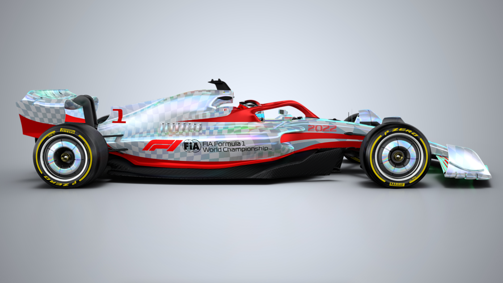
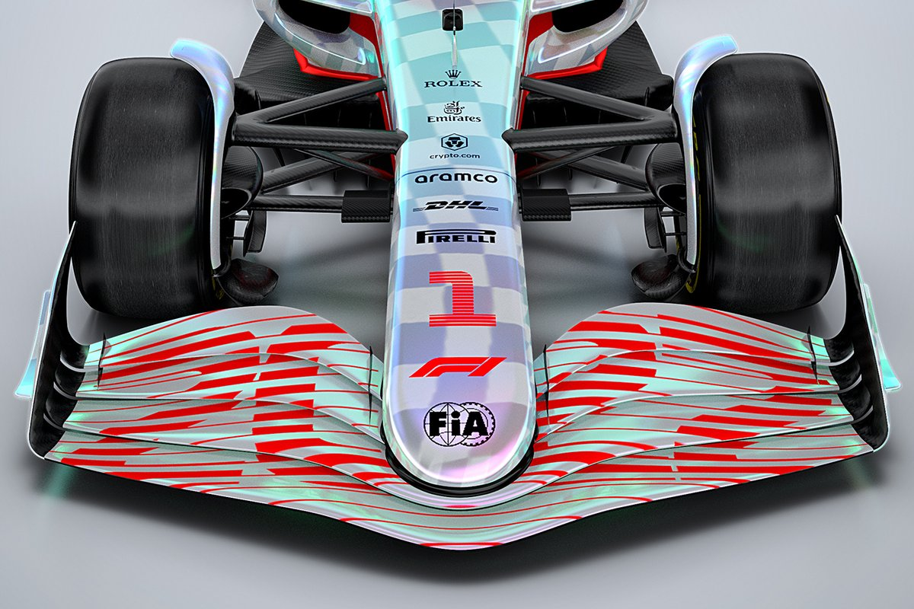
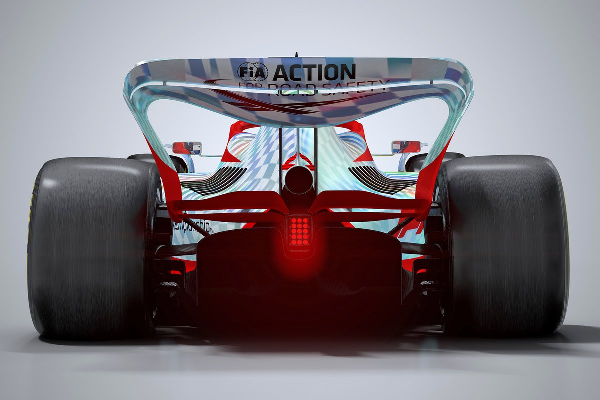

Presentamos la Nueva Generacion de Formula 1

Un pontón o sidepod es una pieza que se encuentra en lateral del coche. Estos tienen mas funciones impoartantes las cuales son:
Sirven para redirigir el flujo de aire
Se utilizan como estructura de impactos lateral
Su función principal es refrigerar el motor y otros componentes del coche

Una de sus funciones es posicionar correctamente el centro de presión del coche en relación con las ruedas delanteras y traseras. El alerón delantero desvía el aire turbulento que se genera en los laterales de las ruedas para que no moleste al resto del coche.

Cuando se alcanzan velocidades muy altas, el Alerón ejerce una fuerte presión en las ruedas manteniendolas en el asfalto.

Calendario

Pilotos